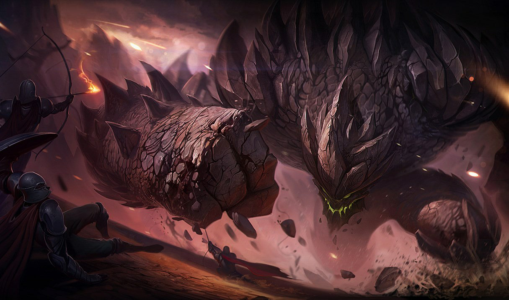
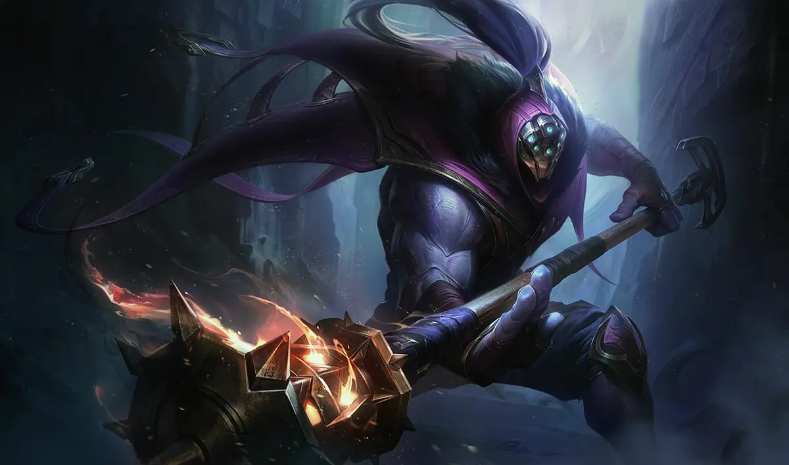

Ornn
Ornn est le demi-dieu de la forge et de l'artisanat à Freljord. Avec comme seule compagne la solitude, il travaille dans sa forge enfouie au plus profond des cavernes de lave de l'Âtre-foyer. C'est là qu'il fond et purifie les métaux nécessaires à la création d'objets de qualité inimitable. Tandis que d'autres divinités, Volibear avant tout, s'immiscent dans les affaires des mortels, Ornn ne sort de son antre que pour remettre ces déités à leur place, avec son fidèle marteau ou les pouvoirs du volcan lui-même.

Malphite
Massive créature de pierre vivante, Malphite lutte pour imposer un ordre sacré dans un monde chaotique. Né pour servir l'obélisque mystique que l'on nomme le Monolithe, il utilisa son incroyable force élémentaire pour protéger son créateur, mais n'y parvint pas. Seul survivant de la destruction qui s'ensuivit, Malphite doit désormais supporter les inconséquences des êtres de chair et trouver un nouveau rôle, digne du dernier survivant de son espèce.
Jax
Jax, dont nul ne peut égaler l'art du sarcasme et des armements inhabituels, est connu comme le dernier maître d'armes d'Icathia. Après la chute de sa terre natale, ravagée par le Néant qu'elle avait eu l'orgueil de déchaîner, Jax et ses compagnons jurèrent de protéger le peu qu'il en restait. La magie montant de nouveau dans le monde, la menace se fait plus pressante et Jax parcourt Valoran, porteur des dernières lumières d'Icathia. Il éprouve les qualités de tous les guerriers qu'il rencontre pour voir s'ils sont assez puissants pour combattre à ses côtés...
